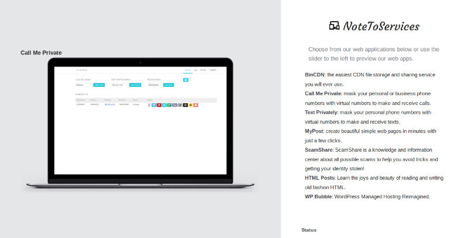

Useful SaaS Apps For Individuals and Businesses
December 29, 2018 — You have probably never heard of NoteToServices because we are a small company. You have probably never seen or used our products, but hopefully you will. We often release them on Hacker News or Product Hunt or any site that might help startups or small businesses get some noticed for their products. We are not Google or Apple or Microsoft. Our office is remotely working at home. We outsource to freelancers and others who help us. What we do is come up with product ideas and debate on whether they are useful or not. Afterwards, through polling, discussion, and generally believing something will be useful, we create it. We are dedicated to making products that are useful to everyday individuals and businesses. We focus on everything from taking notes, reminder services, communication services, blogging services, hosting websites, data storage centers, and more.
Each year, we try to come up with and work on 2-3 useful web applications for everyday businesses. We are always happy to collaborate and help othersand learn in the process. The web applications you see listed in our portfolio, located on the homepage of this website, are web apps we began in2015. We utilized several technologies, converting our earliest apps from PHP 5.4 to PHP 7.x, and are quite fond of apps making use of the powerful MySQL database. With NoteToServices, you will receive personalization and as much general customization as we can offer. We continue to support every web application we create and provide an easy way to contact us via Tawk.To. We do not like to leave anyone hanging, so we'll always get back to you if you leave a message.
If you are just stumbling upon our website, this is a redesign from our old one, which did not have a blog. It was a simple one-page template that featured our products and a carousel of what they looked like. While we thought that was cool for a while, it just did not really represent what we wanted to present and how we would have liked to appear. We had that design from 2015 until the end of 2018. Now at the end of 2018, we felt that our website really needed a brand new look. The method is always the same for us: KISS. Keep It Simple Stupid. We like simplicity. We wanted a websitethat could present our work while also showing more into the personality of who we are, as a company, NoteToServices, and what you see is the result. We hope you like our brand new look! It's here to stay.. for quite a while.

Thank you for visiting. Please feel free to incorporate our applications into your everyday routine. If you have any suggestions, comments, or feedback, don't hesitate to reach out to us.
Feel free to contact us for inqueries or quotes.